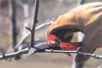
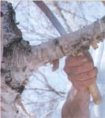
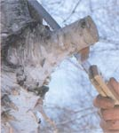
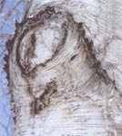
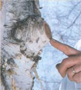
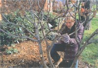
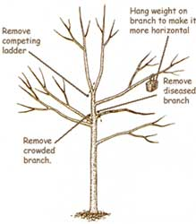
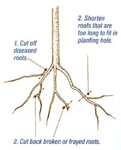
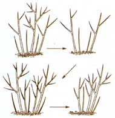
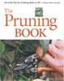

Pruning Made Easy
February/March 2003
by Lee Reich
Do you nip with caution when pruning a plants Or do you ruthlessly attack? No matter what approach you take, sometimes you just have to prune your plants. Here are the most basic pruning principles to follow for fruit-producing plants, other deciduous trees and shrubs, and evergreens.
Removing a Large Branch
Use sharp tools no matter what type of plant you're pruning. Sharp tools make cleaner cuts that heal more quickly. Make cuts on an angle and just above a node, where the leaf attaches to the stem.
If you want to encourage branching, use heading cuts to shorten existing stems. If you want to open an area to light and air, use thinning cuts to completely remove some stems.
On any plant, if you find stems or branches that are dead, diseased or damaged, always cut them down to healthy tissue. That said, let's move on to pruning guidelines for various categories of plants.
PRUNING FRUIT PLANTS
Pruning is most critical for fruit plants. Young fruit trees need a strong framework on which to hang their fruits and to ensure their branches bask in plenty of sugar-producing sunlight. Pruning fruit plants lessens disease problems and, by removing some fruits, pumps more flavor and size into those that remain. With few exceptions, prune fruit plants while they are dormant.
With a young fruit tree, preserve branches that are 6 inches apart and that make wide angles with the trunk. If the tree is initially a single stem, at planting, cut back that stem to 2 to 3 feet above ground level, then select side branches as the plant grows.
If the tree already has branches, save those that are wide-angled and in good positions, but remove all others. Shorten those you save to a few inches.
Do no more pruning on a young tree than is absolutely needed or you will delay fruiting.
Mature fruit trees need annual pruning. The amount to remove depends on the size of the particular fruit and the bearing habit of the tree. Cherries, for instance, are small and are borne on older stems, so the plants need little pruning. Peaches, in contrast, are large and are borne only on 1-year-old wood, so they need severe annual pruning to thin fruits and stimulate new shoots that can bear the following year's crop.
Prune raspberries and other fruit bushes little or not at all when they are young, then annually remove the oldest wood and thin out the youngest wood. The younger the wood on which most fruits are borne and the more new shoots that grow each year from ground level, the more severe the annual pruning will need to be.
At planting, cut grapes and other vines back to a few buds to channel energy into growing a single stem (sometimes two). From then on, training depends on the type of fruit and the kind of trellis or arbor you provide.
New fruiting stems arise where old stems are cut back to within a few buds of permanent branches or the trunk.
DECIDUOUS BUSHES
Most deciduous shrubs look best growing as a fountain of stems. Because they naturally send up new stems from ground level each year, they can be pruned so that old, decrepit stems are in a continual state of replacement by young, vigorous ones. Do not prune at all when the plants are young. Despite all that is said and written about roses, they are just another deciduous shrub and can he pruned as such with fine results.
Prune with hand shears or a Topper, not hedge shears. Use a Topper to cut some of the oldest suckers to the ground or down to low. vigorous replacement shoots. How much to cut varies from shrub to shrub. The more new suckers a plant makes each year, the more suckers you have to remove. Forsythia and red-twig dogwood both need more pruning than witch hazel or smokebush.
Shorten lanky stems that arch all the way to the ground and remove any overcrowded stems in the center of the shrub.
Prune shrubs that flower early in the season right after their blossoms fade. Prune shrubs that flower from summer onwards just before spring growth begins.
DECIDUOUS HEDGES
A few deciduous bushes make nice hedges, although many look best grown informally rather than sheared. In either case, their lack of leaves in winter is offset by their dense twigs. Cut back plants drastically when you plant, to promote low branching and vigorous growth. For formal hedges, shorten main and secondary stems just before the plants begin their second season of growth.
Shape formal hedges so that planes are narrower at their tops than at their bottoms.
This allows light to bathe all parts of the hedge so the hedge doesn't thin out at its ankles. Shear mature, formal hedges after their spring flush of growth, almost back to where growth began for that season. Prune informal hedges the same as individual shrubs: Each year, remove some older stems at the plants' bases, thin out excess young stems and shorten stems that are too long.
DECIDUOUS TREES
Trees do eventually assert their individual character as they age, but early training can be important for long-term strength and beauty. Except for small trees that develop multiple trunks, allow only one vertical shoot to become the trunk, then the central leader (the main vertical branch) running up through the tree. Bend down, cut back, or cut off any competitors. Also use this strategy for coniferous and broadleaf evergreen trees.
For scaffold branches - the future side limbs - select stems that are thinner than the central leader and spaced 1 to 2 feet apart. The height of the lowest scaffold limb depends on how high a head you want. Scaffold limbs will grow thicker, but their aboveground height never changes.
Allow weak temporary branches to remain along the developing trunk and central leader to help thicken and protect the branches from sunburn. Remove these temporary branches after a couple of years.
Prune the developing tree as little as possible. You want growth, and any pruning stunts growth to some degree.
Use thinning cuts to reduce or maintain size and let light and air into the crown of a mature or overgrown tree.
Gradual Renovation of a Neglected Shrub
FIRST YEAR
Thin the youngest stems and cut away some of the oldest stems.
SECOND AND SUBSEQUENT YEARS
Repeat the first-year sequence.
CONIFEROUS TREES AND BUSHES
Generally, coniferous evergreens need little pruning when being trained or after they mature, especially if you plant one suited to the site. There are so many shapes and sizes available for most kinds of conifers that it's often possible to select a plant that will just fit its intended space and require no pruning.
To contain growth or make a plant smaller, prune just before growth begins, cutting stems back to side branches within the plant. Conifers vary in their ability to regrow from old wood, so know or test a plant's response before any drastic pruning. To make a plant denser, shorten new spring growth before the plant has fully expanded.
This article is adapted from Lee Reich's The Pruning Book. See MOTHER'S Bookshelf, Page 129, to order.
BROADLEAF EVERGREEN TREES AND BUSHES
Like conifers, broadleaf evergreens need little pruning - especially if you plant one suited to the site.
As with coniferous trees, prune just before growth begins, and cut stems back to side branches. Broadleaf evergreens vary in their ability to send out new shoots from old stems that are cut back. To make a plant denser, pinch the tips of growing shoots.
Once you get the hang of pruning and are pleased with the results, you might want to learn even more about how this procedure can help a tree develop the healthiest structure possible. You also might want to experiment with some specialized design techniques, such as using pruning to create a pleached tunnel of ironwood trees or a living fence of espalier currants.
|
ndercut one-quarter of the way through the branch to prevent the bark from ripping when the branch falls. |
 Saw through from the top, opposite of your first cut, until the branch is free to fall to the ground. |
 Saw off the stub just beyond the raised collar of bark where the branch attaches to the trunk. |
|
 This photo shows the correct finished cut, flush with the collar. |
 New bark will grow out from the bark collar to cover the cut |
 No matter what type of plant you're pruning, use sharp tools. Cut away stems or branches that are diseased, dead or damaged to encourage new, healthy growth. |
|
 PRUNING A NEWLY PLANTED DECIDUOUS TREE |
 TRIMMING THE ROOTS OF A BARE-ROOT TREE |
 New wood gradually replaces old wood, and growth fills in at the base of the plant. |
|
 |
 |
 |